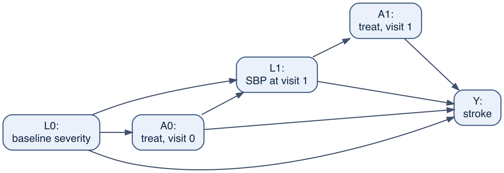
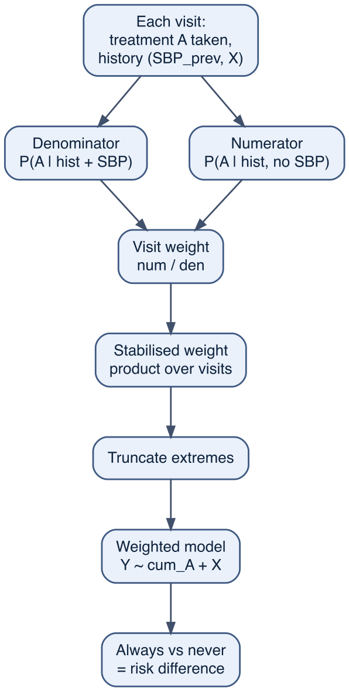
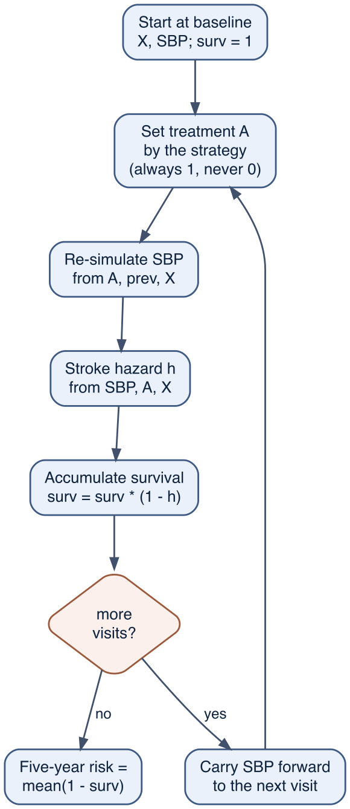

15 Time-varying confounding and g-methods
In Chapter 12 a patient was treated once, and a fixed set of baseline confounders stood between treatment and outcome. Standardising over those confounders, or weighting by them, recovered the causal effect. Most clinical treatment is not like that. A drug is started, continued, stopped, and restarted over months or years, and the variables a clinician watches when deciding to treat — blood pressure, symptoms, lab values — change over time and are themselves moved by the treatment. This chapter is about that setting, and about why it defeats the methods of Chapter 12 when they are applied in the obvious way.
The difficulty has a precise shape. A variable measured during follow-up can be a confounder of later treatment and, at the same time, a consequence of earlier treatment. Adjusting for it removes the confounding but blocks part of the effect; not adjusting for it leaves the confounding in place. Neither choice is correct. The g-methods — inverse-probability weighting and the g-formula — resolve this by accounting for the variable without conditioning on it in an outcome model.
15.1 When the confounder is also a consequence of treatment
Consider our blood-pressure drug given over a sequence of visits. At each visit the clinician sees the patient’s current systolic blood pressure (SBP) and is more likely to start or continue the drug when SBP is high. The drug then lowers SBP at the next visit, and SBP drives the risk of stroke. So SBP sits in two roles at once. The diagram below shows two visits.
Read the arrows around L1. Because L1 -> A1 and L1 -> Y, blood pressure at visit 1 is a confounder of the visit-1 treatment decision: to estimate the effect of A1 we must account for it (Chapter 11). But A0 -> L1 -> Y is a causal path from earlier treatment to the outcome — the drug works partly by lowering blood pressure — so L1 is a mediator of A0. Conditioning on a mediator blocks the path it lies on (Chapter 15), and L1 is also a descendant of treatment, so conditioning on it opens a further bias. A single regression that includes L1 cannot be right for both treatment decisions at once.
15.2 A cohort followed over time
The longitudinal version of our master cohort puts this structure into data. Each patient is seen at five visits; at each visit we record blood pressure, the treatment decision for that interval, and whether a stroke occurred. The generator is in R/simulate_cohort_longitudinal.R; its three structural equations are the feedback in code:
# at each visit k, for every patient still at risk:
treat_prob <- plogis(a0 + a_sbp*(sbp_prev - 140)/10 + a_sev*severity + a_prev*treated_last)
A <- rbinom(n, 1, treat_prob) # high SBP -> more likely treated
sbp <- mean_sbp + rho*(sbp_prev - mean_sbp) - s_drug*A + noise # the drug lowers SBP
stroke <- rbinom(n, 1, plogis(y0 + y_sbp*(sbp - 140)/10 + ... )) # SBP drives strokeTreatment is drawn from a logistic model rather than a hard rule, which keeps the positivity assumption alive: at every history there is some chance of either treatment, so weighting is possible.
Show code
obs <- simulate_cohort_longitudinal(n = 50000, seed = 2024)
truth <- attr(obs, "truth") # the oracle, available because we built the cohort
obs$kf <- factor(obs$k)
K <- max(obs$k)
obs |>
filter(id %in% 1:2) |>
select(id, visit = k, sbp_lag, A, sbp, Y, cum_A) |>
kbl(digits = 1, caption = "Two patients' trajectories (person-period format).") |>
kable_styling(full_width = FALSE)| id | visit | sbp_lag | A | sbp | Y | cum_A | |
|---|---|---|---|---|---|---|---|
| 1 | 1 | 1 | 162.9 | 1 | 159.3 | 0 | 1 |
| 110000 | 1 | 2 | 159.3 | 1 | 143.3 | 0 | 2 |
| 110002 | 1 | 3 | 143.3 | 1 | 142.6 | 0 | 3 |
| 110004 | 1 | 4 | 142.6 | 1 | 134.6 | 0 | 4 |
| 110006 | 1 | 5 | 134.6 | 1 | 128.9 | 0 | 5 |
| 2 | 2 | 1 | 159.7 | 1 | 161.4 | 0 | 1 |
| 210000 | 2 | 2 | 161.4 | 1 | 149.9 | 0 | 2 |
| 210002 | 2 | 3 | 149.9 | 1 | 154.9 | 0 | 3 |
| 210004 | 2 | 4 | 154.9 | 1 | 148.9 | 0 | 4 |
| 210006 | 2 | 5 | 148.9 | 0 | 145.7 | 0 | 4 |
Each row is one patient-visit. sbp_lag is the blood pressure the clinician saw when deciding this interval’s treatment A; sbp is the value after it; cum_A counts the intervals treated so far. The question is the effect of a sustained strategy, in the sense of Chapter 13: what would the five-year stroke risk be if every patient were treated at every visit (“always treat”) versus never treated (“never treat”)? Because we built the cohort, we can read off the answer.
Show code
c(risk_always = truth$risk_always, risk_never = truth$risk_never,
RD = truth$RD, RR = truth$RR)risk_always risk_never RD RR
0.05555979 0.10182728 -0.04626749 0.54562779 Sustained treatment lowers five-year stroke risk from 0.102 to 0.056 — a risk difference of -0.046, a risk ratio of 0.55. That is the number every estimator below is trying to recover.
15.3 The dilemma: adjust and you block the effect, do not and you confound
A natural first attempt extends Chapter 12: fit a pooled model for the per-visit stroke hazard, adjust for the baseline confounders, summarise treatment by the cumulative number of treated intervals, and standardise to compare “always” with “never”. We define a small helper that standardises any fitted hazard model to the two strategies, then apply it.
Show code
base <- obs |> filter(k == 1) |> select(age_c, diabetes, severity) # baseline of every patient
strategy_risk <- function(model, cum_at) { # cum_at(k) = treated-count at visit k under the strategy
surv <- rep(1, nrow(base))
for (k in 1:K) {
nd <- base |> mutate(cum_A = cum_at(k), kf = factor(k, levels = levels(obs$kf)))
surv <- surv * (1 - predict(model, nd, type = "response"))
}
mean(1 - surv)
}
rd_always_vs_never <- function(model)
strategy_risk(model, \(k) k) - strategy_risk(model, \(k) 0)Show code
m_baseline <- glm(Y ~ cum_A + age_c + diabetes + severity + kf, family = binomial, data = obs)
naive_rd <- rd_always_vs_never(m_baseline)
naive_rd[1] -0.02928513This model adjusts for baseline severity but not for the time-varying blood pressure, and it is confounded: the estimated risk difference is -0.029, well short of the true -0.046. Treated intervals are the intervals with high blood pressure, so treatment keeps company with high stroke risk, and the protective effect is understated.
The remedy from Chapter 12 was to adjust for the confounder. Here the confounder is blood pressure, so we add it to the model. Watch the coefficient on cumulative treatment.
Show code
logor_nosbp <- coef(glm(Y ~ cum_A + severity + age_c + diabetes + kf, binomial, obs))["cum_A"]
logor_sbp <- coef(glm(Y ~ cum_A + sbp + severity + age_c + diabetes + kf, binomial, obs))["cum_A"]
c(without_sbp = logor_nosbp, with_sbp = logor_sbp)without_sbp.cum_A with_sbp.cum_A
-0.14442816 -0.01800166 Adding blood pressure pulls the per-interval treatment coefficient from -0.144 to -0.018 — close to zero. The drug acts largely by lowering blood pressure, and conditioning on blood pressure removes that pathway from the estimate. We have traded confounding for a blocked mediator. The two obvious uses of a regression sit on either side of the right answer, and no choice of what to put in a single outcome model lands on it.
15.4 Inverse-probability weighting over time
The way out is to stop conditioning on blood pressure in the outcome model and to use it instead to weight. This is the inverse-probability weighting of Chapter 12, extended across visits. At each visit we model the probability of the treatment the patient actually received, given the history up to that point, and weight each patient by the running product of the inverse probabilities. In the reweighted population, treatment at each visit is detached from the time-varying blood pressure, so the confounding is removed — but blood pressure is never conditioned on, so the mediated pathway survives.
The weights are stabilised: the numerator model contains the baseline variables and past treatment, the denominator adds the time-varying blood pressure. Only the time-varying confounding is removed by the weights; the baseline variables are handled by including them in the final model.
The scheme below traces the construction. Read it as a pipeline: at each visit two propensity models produce a weight, the weights are multiplied along each patient’s path and trimmed, and one weighted outcome model then delivers the contrast. Nowhere is blood pressure put into an outcome model — its whole job is to shape the weights.

Step by step, mapping each line of the code below onto the scheme:
- Two propensity models, not an outcome model.
denmodels the probability of the treatment actually received given the full history — past treatmentA_lag, baseline, and the time-varying blood pressuresbp_lag.numis the same model with blood pressure removed. Neither looks at the stroke outcome at all; this is the opposite of conditioning on blood pressure in a regression forY. - Per-visit contribution. For each patient-visit,
contribis the ratio of the numerator to the denominator probability of the treatment the patient actually took —p_num / p_denwhen treated,(1 - p_num) / (1 - p_den)when not. This is the stabilised ingredient: the numerator keeps the weights near one. - Running product is the weight.
cumprod(contrib)along a patient’s visits gives the stabilised weightsw. A patient who happened to be treated exactly when their blood pressure made treatment likely gets a weight near one; a patient treated against the odds of their history gets a large weight. - What the weight buys. In the re-weighted pseudo-population, treatment at each visit is detached from blood pressure, so the time-varying confounding is gone — yet blood pressure was never entered into an outcome model, so the mediated path
A -> SBP -> Yis left intact. This is the trade the g-formula made the other way. - Truncate. The weights have a long right tail (histories where treatment is nearly certain — a brush with positivity).
trunccapsswat the 1st and 99th percentiles, trading a little bias for stability. - Weighted outcome model — the MSM. Fit
Y ~ cum_A + baselinewithweights = sw. Blood pressure is absent because the weights already did its work. The baseline variables stay in the model directly, which is exactly why the weights are stabilised rather than carrying that confounding too. - Standardise and contrast.
rd_always_vs_neverruns the fitted MSM forward with cumulative treatment counting up (“always”) and held at zero (“never”) and takes the difference — the risk difference between the two sustained strategies.
Show code
den <- glm(A ~ A_lag + I((sbp_lag - 140) / 10) + severity + age_c + diabetes + kf, binomial, obs)
num <- glm(A ~ A_lag + severity + age_c + diabetes + kf, binomial, obs)
obs <- obs |>
mutate(p_den = predict(den, type = "response"),
p_num = predict(num, type = "response"),
contrib = if_else(A == 1, p_num / p_den, (1 - p_num) / (1 - p_den))) |>
group_by(id) |>
mutate(sw = cumprod(contrib)) |> # running product over a patient's visits
ungroup()
trunc <- quantile(obs$sw, c(0.01, 0.99)) # truncate extreme weights
obs <- obs |> mutate(sw = pmin(pmax(sw, trunc[1]), trunc[2]))
msm <- glm(Y ~ cum_A + age_c + diabetes + severity + kf,
family = quasibinomial, weights = sw, data = obs)
ipw_rd <- rd_always_vs_never(msm)
c(mean_weight = mean(obs$sw), ipw_RD = ipw_rd)mean_weight ipw_RD
0.95685602 -0.03514349 The weighted estimate, -0.035, recovers most of the true -0.046 — and is far from both the confounded -0.029 and the collapsed blood-pressure-adjusted estimate. The mean stabilised weight is near one, as it should be. It does not land exactly on the truth, for two reasons worth stating. The weights have a long right tail, so truncation trades a little bias for stability; and the model summarises a sustained strategy by a single cumulative-treatment term, which is an approximation to the real accumulation of effect through blood pressure. Weighting is robust and makes few assumptions about the outcome, but it pays for that in precision.
15.5 The g-formula over time
The second g-method models the machinery directly and then simulates it. Where IP weighting refused to model blood pressure and reweighted around it, the g-formula does the opposite: it writes down how blood pressure evolves and how it drives the outcome, then runs that little world forward under each strategy and reads off the risk. We fit two models — one for how blood pressure evolves (given its past, treatment, and baseline) and one for the stroke hazard — then play the cohort forward under “always treat” and again under “never treat”. The key is that blood pressure is re-simulated at each step rather than held fixed, so the pathway from treatment through blood pressure to the outcome is preserved.
The scheme below shows one trip through the loop. Read it as a recipe run separately for each strategy: treatment is set by the strategy, blood pressure is redrawn from its model, and the two feed the hazard before the loop carries the new blood pressure into the next visit.

Step by step, mapping each line of the code below onto the scheme:
- Fit the confounder’s law of motion.
sbp_modellearns how this visit’s blood pressure depends on last visit’s blood pressure, the current treatment, and baseline. This is exactly the equation IP weighting declined to write down; the g-formula leans on it. - Fit the outcome model.
haz_modellearns the per-visit stroke hazard from the current blood pressure, treatment, and baseline. Blood pressure is a predictor here — but at prediction time it will be a simulated value under the strategy, not the patient’s observed value, which is what stops it from blocking the mediated path. - Start everyone at their real baseline.
sbp_previs each patient’s first-visit blood pressure and everyone begins alive (surv = 1). Only the starting point is taken from data; everything after is generated. - Set treatment by the strategy, not by the data. Inside the loop
A = set_drug—1for “always”,0for “never”. We overwrite what each patient actually received with what the strategy dictates. This is the intervention. - Re-simulate blood pressure. Predict the mean blood pressure from
sbp_modelat the strategy’s treatment, then add noise (rnorm). BecauseAenters this model, “always treat” yields a lower simulated blood pressure than “never treat” — the drug’s effect on blood pressure is reproduced, not assumed away. This is the line that would be wrong if blood pressure were held fixed. - Turn blood pressure into risk. Feed the freshly simulated blood pressure and the strategy’s treatment into
haz_modelto get this visit’s stroke hazard. - Accumulate survival. Multiply the running survival probability by
(1 - haz). - Carry blood pressure forward. Set
sbp_prev = sbpso the next visit’s simulation starts from this visit’s value. This is the link that lets the effect compound: a treated patient enters the next visit already at the lower blood pressure the drug produced, which lowers the next blood pressure again, and so on. - Average, then contrast. After
Kvisits the five-year risk is the mean of(1 - surv). Run the whole loop once withset_drug = 1and once withset_drug = 0; the difference of the two risks is the risk difference.
The pivot is steps 5 and 8 together. Holding blood pressure fixed — at its baseline or its observed value — would sever A -> SBP, erasing the mediated effect, the same failure as conditioning on it in a regression. Redrawing it from a model that contains A, and feeding it forward, is what keeps the pathway alive while still adjusting for the confounding.
Show code
sbp_model <- lm(sbp ~ sbp_lag + A + severity + age_c, data = obs)
haz_model <- glm(Y ~ sbp + A + severity + age_c + diabetes, family = binomial, data = obs)
sigma_sbp <- sigma(sbp_model)
b0 <- obs |> filter(k == 1) |> select(severity, age_c, diabetes, sbp_lag)
gformula_risk <- function(set_drug) {
set.seed(7)
sbp_prev <- b0$sbp_lag; surv <- rep(1, nrow(b0))
for (k in 1:K) {
mu <- predict(sbp_model, mutate(b0, sbp_lag = sbp_prev, A = set_drug))
sbp <- mu + rnorm(length(mu), 0, sigma_sbp) # re-simulate, do not fix
haz <- predict(haz_model, mutate(b0, sbp = sbp, A = set_drug), type = "response")
surv <- surv * (1 - haz); sbp_prev <- sbp
}
mean(1 - surv)
}
gform_rd <- gformula_risk(1) - gformula_risk(0)
gform_rd[1] -0.04845002The g-formula estimate, -0.048, is close to the true -0.046. It uses blood pressure as a predictor at every step yet never conditions on it as if fixed, which is exactly what lets it adjust for the confounding while keeping the mediated effect. The price is the opposite of weighting’s: the g-formula needs a correct model for the confounder’s evolution as well as for the outcome, and it is only as good as those models.
Show code
tibble(
method = c("truth (oracle)",
"naive: adjust baseline only",
"naive: adjust for blood pressure",
"IP-weighted MSM",
"parametric g-formula"),
estimate = c(sprintf("RD = %.3f", truth$RD),
sprintf("RD = %.3f", naive_rd),
sprintf("treatment log-OR collapses %.2f -> %.2f", logor_nosbp, logor_sbp),
sprintf("RD = %.3f", ipw_rd),
sprintf("RD = %.3f", gform_rd)),
verdict = c("the target",
"confounded (effect understated)",
"mediator blocked (effect erased)",
"recovers most of the effect",
"recovers the effect")
) |> kbl(caption = "Five analyses of the same cohort.") |> kable_styling(full_width = FALSE)| method | estimate | verdict |
|---|---|---|
| truth (oracle) | RD = -0.046 | the target |
| naive: adjust baseline only | RD = -0.029 | confounded (effect understated) |
| naive: adjust for blood pressure | treatment log-OR collapses -0.14 -> -0.02 | mediator blocked (effect erased) |
| IP-weighted MSM | RD = -0.035 | recovers most of the effect |
| parametric g-formula | RD = -0.048 | recovers the effect |
15.6 Static and dynamic strategies
The two g-methods estimate the effect of a strategy, and the strategy need not be “always” or “never”. A clinician does not treat regardless; she treats when blood pressure is high. That is a dynamic strategy — treat at a visit if SBP exceeds a threshold — and it is often the policy of real interest (Chapter 13). The cohort’s oracle gives its five-year risk too:
Show code
c(risk_always = truth$risk_always, risk_dynamic = truth$risk_dynamic,
risk_never = truth$risk_never) risk_always risk_dynamic risk_never
0.05555979 0.05705873 0.10182728 Treating only when blood pressure is high, 0.057, comes close to the risk under always-treat, 0.056, at a fraction of the treatment. Standard regression cannot compare such strategies at all, because a dynamic strategy is defined through the time-varying blood pressure that the regression would have to condition on. The g-methods can, because they intervene on the strategy rather than condition on its inputs.
15.7 The fine print
The assumptions of Chapter 12 return, now indexed by visit. Sequential exchangeability asks that, at each visit, the measured history is enough to make the treated and untreated comparable for that interval — no unmeasured time-varying confounding. Positivity must hold at every visit: at each history there is a real chance of either treatment. This is harder to satisfy over time, because a patient whose blood pressure makes treatment nearly certain contributes an extreme weight, which is why the weights had a long tail. Consistency requires that the strategy names a well-defined intervention at each visit.
These methods do not lower the bar of causal reasoning; they raise it, because the assumptions must hold at every step. What they buy is the ability to ask a question that standard adjustment cannot answer at all: the effect of a treatment carried over time, when the reasons for treating it are themselves changed by it. The Bayesian version of the g-formula, with full posterior uncertainty on the strategy contrast, is the subject of Chapter 28.
15.8 Key points
- A variable measured during follow-up can be a confounder of later treatment and a mediator of earlier treatment at once. Standard regression cannot handle both roles: leaving it out confounds the estimate, putting it in blocks the mediated effect.
- G-methods resolve this by accounting for the time-varying confounder without conditioning on it in an outcome model — by weighting (inverse-probability weighting / marginal structural models) or by simulation (the g-formula).
- They are the same logic as Chapter 12 extended over time: IP weighting generalises the weighting estimator, the g-formula generalises standardisation. The single-time case was the special case with no feedback.
- The two carry opposite costs: weighting needs no outcome model but loses precision to unstable weights; the g-formula is efficient but needs a correct model for the confounder’s evolution.
- G-methods estimate the effect of a strategy, including dynamic treat-when-indicated strategies that standard regression cannot evaluate.
15.9 Exercises
Watch the weights. Re-fit the IP-weighted model without truncating the weights, and again truncating at the 5th and 95th percentiles. How does the estimate change, and how does the largest weight change? Relate what you see to positivity.
Break sequential exchangeability. The generator’s treatment depends on blood pressure, which we measure. Modify it so treatment also depends on an unmeasured time-varying variable that affects stroke. Re-run the IP-weighted and g-formula estimates. Why do both now miss the truth?
A dynamic strategy by g-formula. Extend
gformula_risk()to a dynamic strategy: treat at visitkonly if the simulated blood pressure exceeds 140. Compare your estimate to the oracle’srisk_dynamic.The cost of the mediator. Using the cohort, estimate the effect of treatment at the final visit only, adjusting for blood pressure at that visit. Is adjusting for blood pressure wrong here? Explain how this differs from adjusting for it when estimating the sustained-strategy effect.
Conceptual. A reviewer objects that the g-formula “just assumes the answer” by modelling blood pressure. Using the contrast between the two g-methods, explain what each one assumes and why neither assumes the effect it estimates. ```